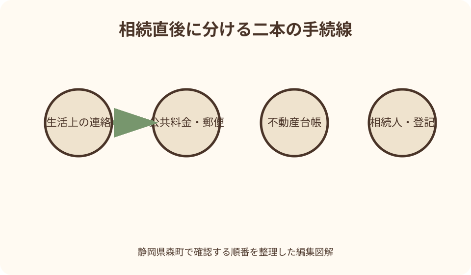
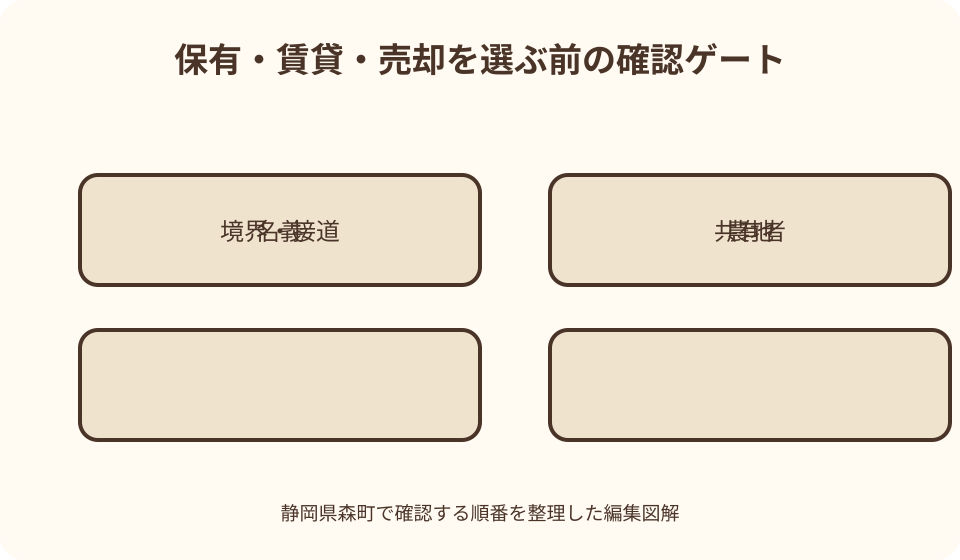

相続・空き家｜最終確認 2026-08-10
静岡県森町の相続不動産・実家を承継した後の確認｜名義・管理・活用を整理する
森町の実家を承継した直後は、葬送、住民・年金・保険、公共料金、郵便、家の鍵、農地や山林の管理が同時に押し寄せます。しかし、死亡届に伴う生活上の連絡、誰が何を相続するか、法務局の名義、森町の固定資産税、建物の維持、売る・貸す・保有する判断は別の工程です。先に家を片付けたり売却査定だけを取ったりすると、権利、境界、農地、遺品、税務の前提が揃わないことがあります。地番別の台帳と管理担当をつくり、専門家へ渡せる形にする手順をまとめます。

編集イラスト死亡直後の生活手続と不動産整理を二列に分ける
最初の表は、葬送、役所、健康保険、年金、金融、携帯、電気・ガス・水道、郵便など生活上の連絡です。誰がいつ連絡したかを記録します。
二つ目の表は、土地、家屋、農地、山林、貸家、駐車場など不動産ごとの地番、名義、利用、鍵、管理者です。生活の名義変更と登記の名義変更を混ぜません。
公共料金を止める前に、空き家管理で電気や水が必要か確認します。冷蔵庫、給湯、凍結、井戸、浄化槽、防犯機器など設備ごとに停止の影響が違います。
急ぎの連絡に期限があっても、不動産全体の結論を同じ日に出す必要があるとは限りません。期限は制度ごとに公式窓口と専門家へ確認します。
最初の訪問では処分より安全と記録を優先する
実家へ入るときは単独で無理をせず、鍵、漏水、ガス臭、停電、倒木、屋根材、動物侵入を外側から確認します。危険があれば建物へ入らず管理者や専門業者へ連絡します。
郵便、納税通知、保険、登記識別情報、権利証、契約書、測量図、農地資料、通帳などは捨てず、発見場所を記録して保管します。
室内と外周を日付入り写真で撮り、メーター、設備、傷み、残置物、境界標らしい箇所を一覧にします。写真だけで所有範囲や故障原因を断定しません。
形見分け、家財売却、大量廃棄は、相続人や関係者の確認前に進めない方が安全です。必要書類や価値のある物まで失わないよう一時保管区域を決めます。
遺言・相続人・遺産分割を登記の前提として整理する
遺言書の有無、種類、保管先を確認し、家庭裁判所の手続が関係する場合を含め専門家へ相談します。封を開けてよいかを自己判断しません。
戸籍を集めて相続人の範囲を確認します。普段連絡を取る家族だけを相続人と見なさず、婚姻、養子、過去の戸籍も含む確認方法を司法書士等へ聞きます。
遺産分割は実家一棟だけでなく、土地、建物、農地、預貯金、債務など全体との関係があります。不動産だけを先に口約束で割り振りません。
相続放棄、限定承認、債務、保証が気になる場合は、財産を処分する前に法律の専門家へ急いで相談します。この記事から期限や効果を個別判断しません。

良い点
森町公式には固定資産税、空き家・空き地バンク、農地、ハザードマップの入口があり、町内不動産を地番ごとに確認する担当先を組み立てられます。
法務局、国税庁、森町の資料を役割別に並べると、登記、税、管理、活用を一つの回答で済ませず、それぞれの専門窓口へ戻れます。
家族が遠方にいても、共有台帳に現地確認日、写真、鍵、支払、次回作業を記録すれば、一人へ負担と情報が集中する状態を減らせます。
売却を急ぐ前に建物、農地、境界、家財を整理することで、保有、賃貸、売却、解体の比較に必要な不足資料を見える形にできます。
不動産を地番・家屋番号ごとの台帳にする
固定資産資料に載る土地と家屋を、所在地、地番、家屋番号、地目、面積、名義、利用者、資料日で一覧にします。通称の『実家の土地』だけで管理しません。
一つの敷地が宅地、畑、山林、通路など複数筆に分かれることがあります。建物敷地と進入路、駐車、裏山、水路の筆を地図上で対応させます。
固定資産資料と登記事項が同じ範囲を示すとは限らず、未登記家屋等が関係する場合もあります。森町税務担当と法務局、専門家へ資料の差を確認します。
被相続人が町外にも不動産を持っていた可能性があれば、森町の通知だけで全財産が揃ったと結論づけません。通帳、郵便、契約、登記資料も照合します。
固定資産税の代表者届と相続登記を混同しない
森町公式は、相続登記が終わるまで固定資産税書類を受け取る相続人代表者の届出を案内しています。これは登記名義を変更する手続そのものではありません。
納税通知の宛名が一人になっても、その人だけが不動産を取得したと直ちに確定するわけではありません。共有や遺産分割との関係を専門家へ確認します。
課税明細では土地と家屋の所在、地目、床面積等を確認し、前年資料も残します。税額だけを見て不動産の市場価値や売却可能額を推定しません。
納付方法、送付先、代表者変更、家屋の取壊し等は森町へ個別に照会します。登記、町税、相続税・所得税の窓口を一つだと思わないことが重要です。

相続登記は法務局の最新案内へ戻る
不動産の相続があっても登記名義は自動で変わりません。法務局の相続登記義務化案内で、自分の相続開始日と取得を知った時期に関する扱いを確認します。
遺言による取得、遺産分割、法定相続による登記では必要書類が異なり得ます。一般的な書式をそのまま当てはめず、司法書士か法務局案内へ相談します。
遺産分割がまとまらない場合に関係する相続人申告登記も、所有権を誰へ確定する登記と同じではありません。制度の効果と次に必要な手続を確認します。
期限、過料、登録免許税、免税措置は改正や個別事情が関わるため、記事の数字だけで判断しません。公式更新日と相談日を台帳へ記録します。
共有は持分だけでなく連絡と費用負担を決める
複数人で不動産を承継する案では、持分割合だけでなく、鍵を持つ人、点検、草刈り、税、保険、修繕、家財、近隣連絡の担当を決めます。
一人が立替え続けると、後で費用の必要性や金額を巡る行き違いが生じます。見積り、承認方法、領収書、精算時期を共有者間の記録に残します。
売る、貸す、解体する、担保にするなどの判断に必要な同意や手続は行為によって違います。持分があれば単独で全体を決められるとは考えません。
連絡がつかない相続人、判断能力、未成年者、海外居住などが関係する場合は早めに司法書士や弁護士へ相談します。家族内だけで法的結論を出しません。
境界・越境・進入路は現地と資料を合わせる
相続した実家の塀、生垣、側溝、茶畑の畝、山際が登記上の境界と一致する保証はありません。公図、地積測量図、境界確認書、現地標を照合します。
隣家の屋根、配管、樹木が越えているように見えても、写真だけで権利侵害を断定しません。土地家屋調査士へ測量資料と現況を見せます。
接道する道が私道や農道の場合、持分、通行、掘削、維持費を確認します。家族が長年通ってきた事実だけで売却や建替えの条件を説明しません。
境界確認には隣接所有者との調整と時間が必要な場合があります。売却期日を先に確約せず、測量範囲、費用負担、未確定部分の扱いを相談します。
農地と宅地を同じ処分手順にしない
実家の裏にある畑、田、茶園が相続対象なら、登記地目と現況、耕作者、貸借、農業委員会の台帳を確認します。草刈りだけで宅地扱いにはなりません。
相続による農地取得に関係する届出、耕作目的の貸借・売買、宅地等への転用は別の手続です。森町農業委員会へ地番と今後の案を示して聞きます。
空き家と農地を一緒に譲る案でも、下限面積に関する変更だけを見て自由に取得できると解釈しません。森町公式は許可要件が残る旨を案内しています。
農地の水路、進入、草刈り、地域の共同作業、賃借人との関係も確認します。建物だけ先に売却して農地管理が残る組み合わせを避けます。
注文したい点
町から届く固定資産資料には、相続人代表者届、登記、農地、空き家相談が別手続であることを一枚の案内図で示してもらえると迷いを減らせます。
専門家へは結論だけでなく、必要資料、未確認点、次の窓口、費用、見込み期間を一覧で返してもらいたいところです。家族会議で共有できる形にします。
不動産事業者の査定には、査定対象筆、家財、境界、農地、修繕・解体、媒介条件を明記してもらいます。高い提示額だけで依頼先を決めません。
管理業者へは訪問日、写真位置、換気、通水、郵便、草木、異常、緊急対応の報告様式を求めます。『見ておきます』だけで遠方管理を委ねません。
空き家管理は鍵・水・風・草・郵便を定例化する
当面空き家にするなら、鍵の本数と保管者を記録し、無断立入りを防ぎます。近隣へ連絡先を伝える範囲も相続人間で決めます。
点検では外壁、屋根、雨樋、漏水、通水、換気、カビ、害虫、郵便、庭木、道路への枝、側溝を同じ順で見ます。危険な高所作業は業者へ依頼します。
台風、大雨、凍結、地震の後は通常点検と別に確認します。森町の防災情報と道路状況を見て、危険時に現地へ向かわない基準を家族で共有します。
火災保険等は空き家状態、管理頻度、用途変更が契約へどう関係するか保険会社へ確認します。従前契約が自動的に同条件で続くと決めません。
家財・仏壇・写真・書類を段階的に整理する
一室を重要物の確認区域にし、権利資料、税資料、通帳、印章、写真、手紙、貴金属、借用品を分類します。廃棄業者が入る前に相続人で確認します。
仏壇、位牌、墓、地域行事の道具は家の売却と別の関係者がいることがあります。寺院、親族、地域の担当者へ相談し、無断で処分しません。
家財処分は一般廃棄物の扱い、家電、危険物、農薬、ガス容器など品目別の方法を森町や許可業者へ確認します。無許可の回収を価格だけで選びません。
作業前後を撮影し、見積書、処分方法、搬出日、鍵の受渡しを残します。売却査定のための片付けと、遺産の確定を同じ工程にしません。
税務は相続時・保有中・譲渡時を分けて相談する
相続税が関係するか、申告が必要かは財産全体、債務、相続人、評価、特例で変わります。不動産の固定資産税評価額だけから結論を出しません。
保有中には固定資産税、賃貸するなら所得や経費、売却するなら譲渡所得や取得費など別の論点があります。税理士へ時点別に資料を渡します。
国税庁には相続した空き家の譲渡や取得費に関する特例の案内がありますが、対象家屋、居住、売却時期、工事、他制度との関係など要件確認が必要です。
特例名だけを知って売却日や解体を決めず、契約前に税務署または税理士へ最新法令と事実関係を確認します。この記事は適用や節税額を保証しません。
売る・貸す・保有するを同じ期間で比べる
売却案は、査定額だけでなく測量、境界、家財、修繕、解体、仲介、税、引渡し条件、農地を含めて手取りと期間を幅で見ます。
賃貸案は、修繕、設備、安全、募集、管理、空室時、退去、庭や浄化槽の負担を見積もります。貸したい意思だけで入居者が決まるとは限りません。
保有案は、家族利用の頻度、固定費、点検交通費、草刈り、保険、災害対応、将来の再検討日を決めます。用途が未定のまま無期限に置きません。
三案の比較基準を五年など同じ期間へそろえ、家族の労力も記載します。最高価格ではなく、権利と管理を実行できる案を選びます。
空き家・空き地バンクは登録条件から確認する
森町の空き家・空き地バンクは賃貸物件と売却物件を掲載する公式入口です。現在の公開件数を将来の成約可能性や価格の根拠にはしません。
登録前に、所有者、相続登記、共有者の意向、境界、家財、農地、修繕、媒介など何を整える必要があるか定住推進課へ相談します。
利用申込みや交渉の仕組み、町と宅地建物取引業者の役割、登録後の管理、取消しを確認します。町が売買・賃貸の結果を保証すると考えません。
農地付きの場合は空き家バンク手続だけで終わらず、農業委員会の許可・届出や耕作条件を別に確かめます。買い手候補へ曖昧な説明をしません。
専門家へ同じ不動産台帳を渡す
司法書士には相続人、遺言、遺産分割、登記、土地家屋調査士には地番、境界、未登記建物、測量を中心に相談します。役割を一人へまとめません。
税理士には財産・債務、評価資料、過去の取得・建築費、利用状況、売却案を渡します。弁護士には争い、債務、連絡困難、処分権限等を相談します。
不動産事業者と建築・解体・管理業者には、対象筆、権利整理の進み具合、農地、境界、残置物を同じ台帳で示し、見積り範囲をそろえます。
相談記録には、確認できた事実、専門家の前提、保留、次の担当、期限の根拠を分けて書きます。家族への伝言で条件が変わるのを防ぎます。
代案・結論
すぐ結論を出せないときは、相続登記等の必要手続を進めつつ、半年ごとの管理計画と再検討日を決めます。放置と保留は同じではありません。
家族が管理できない場合は、現地管理を委託し、売却・賃貸の資料整備を並行します。危険箇所は活用判断より先に専門業者へ相談します。
共有の話合いが進まない、債務が不明、境界や農地が複雑、税の期限が迫る場合は、自己流の書類作成を止め、該当分野の専門家へ早めに持ち込みます。
結論は売る・貸す・保有のどれでも、権利、税、物理状態、管理者、費用を説明できる状態で選びます。期限や法的効果は最新の個別回答で確定します。
大石の視点
森町の実家を継いだとき、最初に必要なのは査定額より鍵と地番の一覧です。誰が入り、どこまでが対象で、次の雨までに何を見るかが家を守ります。
家族の思い出がある家ほど、片付け、登記、税、売却を一度に話すと合意しにくくなります。事実確認と価値判断を別の日に分けるのが現実的です。
農地や山林が付く森町の相続では、建物だけの便利な処分案を作らず、残る土地と地域の管理まで一枚の地図にします。後へ回した一筆が長く負担になるからです。
承継は急いで手放すことでも、思いだけで抱えることでもありません。公的資料と専門家の回答を家族が共有し、次の人へ説明できる状態をつくる作業です。
公式情報・確認先
掲載内容は次の一次情報を基礎に整理しました。営業、料金、催し、交通は変わるため、出発前または手続き前にリンク先で最新情報を確認してください。
- よくあるご質問〈固定資産税全般〉（静岡県森町、2026-08-10確認）
- 空き家・空き地バンク物件公開ページ（静岡県森町、2026-08-10確認）
- 空き家付き農地の取得について（静岡県森町、2026-08-10確認）
- 森町防災ハザードマップ（静岡県森町、2026-08-10確認）
- 相続登記申請義務化に関するまとめページ（法務局、2026-08-10確認）
- 静岡地方法務局 管轄のご案内（不動産登記）（静岡地方法務局、2026-08-10確認）
- 相続税がかかる財産（国税庁、2026-08-10確認）
- 被相続人の居住用財産（空き家）を売ったときの特例（国税庁、2026-08-10確認）
- 相続財産を譲渡した場合の取得費の特例（国税庁、2026-08-10確認）